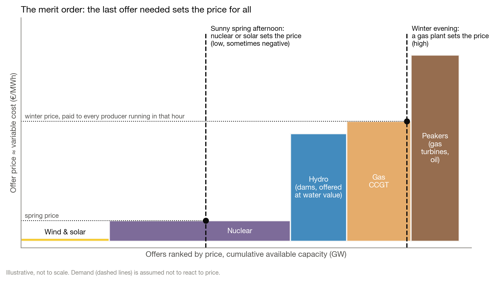
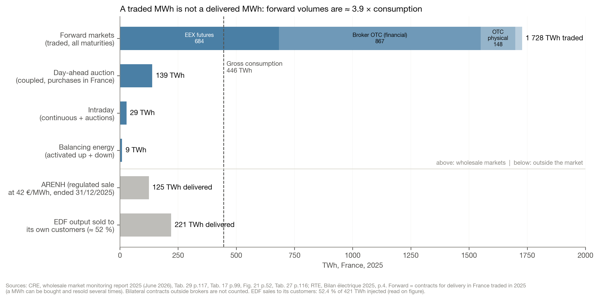

Le prix de l'électricité : comment il se forme, à quoi il ressemble, ce qui s'y ajoute
Comment se forme le prix horaire de l'électricité : l'ordre de mérite et la dernière centrale appelée, l'eau des barrages offerte à sa valeur d'usage, la suite des marchés (à terme, veille pour le lendemain couplée en Europe, infrajournalier, équilibrage). À quoi ressemblent les prix français de 2019 à 2025 : niveau, creux de midi et pointe du soir, heures négatives, prix capté, crise de 2022. Ce qui s'y ajoute (capacité, garanties d'origine, PPA, CfD, fin de l'ARENH), ce que paient ménages et industriels, ce que vaut la flexibilité, et pourquoi deux jeux de prix divergent.
1. La question et la réponse
La question. D’où vient le prix horaire de l’électricité qu’on lit dans un jeu de données, pourquoi change-t-il autant d’une heure à l’autre, et pourquoi deux jeux de prix pour la même année peuvent-ils être si différents ?
La réponse, en trois phrases. Chaque heure, les offres des producteurs sont rangées de la moins chère à la plus chère, et la dernière offre nécessaire pour couvrir la demande fixe le prix payé à tous : c’est l’ordre de mérite. Ce prix suit donc la centrale qui ferme la marche : presque nul à midi au printemps quand le solaire et le nucléaire suffisent, élevé un soir d’hiver quand il faut une centrale à gaz, ce qui donne des prix négatifs comme des pointes au-dessus de 100 €/MWh dans la même journée. Deux jeux de prix divergent quand ils diffèrent par ce qui décide de la dernière centrale appelée : prix du gaz et du CO₂, demande et météo, parc installé, voisins, et la façon dont l’eau des barrages et les stockages sont valorisés.
Le plan. La section 2 pose le vocabulaire. La section 3 explique l’ordre de mérite, la section 4 la suite de marchés du long terme au temps réel. La section 5 montre à quoi ressemblent les prix observés, la section 6 raconte la crise de 2022. La section 7 présente ce qui s’ajoute au marché de l’énergie (capacité, garanties d’origine, contrats longs), la section 8 ce que paie un consommateur et ce que vaut la flexibilité, la section 9 les réformes en cours. La section 10 dit pourquoi deux jeux de prix divergent et ce que cela change pour les mini-projets du cours.
2. Le vocabulaire
L’électricité se vend en mégawattheures (MWh). Un MWh, c’est une puissance de 1 MW pendant une heure. La France a consommé 446 TWh en 2025 (1 TWh = un million de MWh) et produit 547,5 TWh, dont 373 TWh de nucléaire ; la pointe de consommation a atteint 88 GW (RTE, 2026).
Le marché de gros est celui où producteurs, fournisseurs, grands industriels et négociants s’échangent l’électricité, en €/MWh. Le marché de détail est celui où un fournisseur vend à un ménage ou à une entreprise. Le prix de détail contient le prix de gros, mais aussi le réseau et les taxes (section 8).
RTE, le gestionnaire du réseau de transport (GRT), tient l’équilibre entre production et consommation à chaque instant. Les fournisseurs achètent en gros et revendent à leurs clients. Chacun est responsable d’équilibre : il paie à RTE l’écart entre ce qu’il a injecté et ce que ses clients ont soutiré. Les bourses (EPEX SPOT, Nord Pool) organisent les enchères.
Deux produits reviennent partout. Le ruban base livre la même puissance toutes les heures de l’année. Le ruban pointe ne livre qu’aux heures ouvrées de jour, les plus chères.
3. Comment se forme le prix : l’ordre de mérite
Chaque producteur propose sa production à un prix proche de son coût variable, ce que lui coûte un MWh de plus : combustible, CO₂, usure. Le solaire et l’éolien n’ont pas de combustible, leur coût variable est presque nul. Le nucléaire a un combustible bon marché. Une centrale à gaz paie son gaz et son CO₂ : son coût variable a varié de 80 à 230 €/MWh selon les mois de 2025 (RTE, 2026).
On range les offres par prix croissant. La demande de l’heure coupe cette courbe. La dernière offre retenue est l’offre marginale, et son prix devient le prix payé à tous les producteurs retenus. C’est la tarification marginale (en anglais pay-as-clear).

Ce prix unique pousse chaque producteur à offrir son vrai coût variable : il est sûr d’être appelé dès que le prix le dépasse. Les producteurs bon marché touchent la différence entre le prix et leur coût variable. Cette rente inframarginale rembourse leur investissement : une centrale solaire ou nucléaire ne vit que de ces écarts.
L’eau des barrages ne coûte rien, mais elle n’est pas offerte à zéro. Un lac contient un stock limité. Turbiner aujourd’hui, c’est ne pas turbiner demain. L’exploitant offre donc son eau à sa valeur d’usage : le prix qu’il espère obtenir plus tard, souvent proche du coût de la centrale à gaz qu’elle remplacera (CRE, 2026). En France, en 2025, l’hydraulique fixe ainsi le prix 40 % des heures pour 11 % de la production, le nucléaire 31 % et le gaz 9 % (CRE, 2026, lu sur figure).

Idée reçue : « le prix de l’électricité est fixé par le gaz ». C’est faux pour la France en 2025, où le gaz n’est marginal que 9 % des heures. Mais c’est vrai en partie, parce que l’eau et les imports sont offerts à des prix qui suivent le gaz. Le prix français dépasse le coût variable d’une centrale à gaz environ 31 % des heures en 2025, 18 % en 2024 et 54 % en 2023 (CRE, 2026). À l’échelle de l’Union, en 2022, le gaz a fixé le prix 63 % du temps pour environ 20 % de la production (rapport Draghi, 2024, citant le Centre commun de recherche de la Commission).
4. Une suite de marchés, du long terme au temps réel
L’électricité d’une heure donnée s’achète par morceaux, à des dates de plus en plus proches de la livraison.
| Marché | Quand | À quoi il sert | Volume France 2025 |
|---|---|---|---|
| Contrats longs (PPA, CfD, contrats nucléaires) | 10 à 40 ans | stabiliser un prix, financer une centrale | non publics |
| Marchés à terme (EEX, courtiers) | de la semaine à 3 ans | couvrir à l’avance ses ventes ou ses achats | 1 727 TWh échangés |
| Day-ahead (veille pour le lendemain) | la veille à midi | fixer le programme et le prix de chaque quart d’heure | 139 TWh achetés |
| Infrajournalier | jusqu’à la livraison | corriger après une nouvelle prévision météo | 28 TWh |
| Équilibrage | temps réel | RTE active des réserves pour combler l’écart | 3,7 TWh à la hausse, 5,6 à la baisse |
Sources : CRE, rapport de surveillance 2025 (2026).
Le day-ahead est l’enchère de référence. Chaque jour, les offres d’achat et de vente pour le lendemain sont confrontées en une seule enchère pour presque toute l’Europe : c’est le couplage européen des marchés. Un algorithme calcule à la fois les prix de chaque zone (la France, l’Allemagne-Luxembourg, l’Italie du Nord…) et les échanges entre elles, dans la limite des capacités d’interconnexion. Quand une ligne n’est pas saturée, les prix des deux côtés sont égaux. Quand elle l’est, ils divergent. Depuis le 1ᵉʳ octobre 2025, l’enchère fixe un prix par quart d’heure et non plus par heure (CRE, 2026).
Un MWh échangé n’est pas un MWh livré. Les 1 727 TWh échangés à terme en 2025 représentent 3,9 fois la consommation : un même MWh est acheté et revendu plusieurs fois avant sa livraison. Jusqu’en 2025, une grande partie de l’électricité ne passait même pas par le marché : EDF vendait 52 % de sa production à ses propres clients, et 125 TWh partaient aux fournisseurs concurrents au prix régulé de l’ARENH (section 7).

5. À quoi ressemblent les prix
5.1 Le niveau, année par année
| Année | 2019 | 2020 | 2021 | 2022 | 2023 | 2024 | 2025 |
|---|---|---|---|---|---|---|---|
| Prix day-ahead moyen France (€/MWh) | 39,5 | 32,2 | 109,2 | 275,8 | 96,9 | 57,8 | 61,1 |
| Heures à prix négatif | 27 | 102 | 64 | 4 | 147 | 352 | 513 |
Sources : CRE, rapports de surveillance (prix) ; RTE et calcul sur les prix day-ahead publiés par ENTSO-E (heures négatives).
Depuis 2024, la France est moins chère que ses voisins : 61 €/MWh en 2025 contre 89 en Allemagne et 116 en Italie du Nord. Les prix français et allemand ne sont égaux que 10 % du temps (CRE, 2026) : les interconnexions sont souvent saturées.
5.2 La forme : la journée et la saison
Le prix moyen cache une forme très marquée. Le tableau donne le prix moyen à quelques heures de la journée en 2025, en été (avril à septembre) et en hiver (janvier à mars et octobre à décembre).
| Heure (heure de Paris) | 4 h | 8 h | 14 h | 19 h | 22 h |
|---|---|---|---|---|---|
| Été 2025 (€/MWh) | 34 | 59 | 2 | 71 | 84 |
| Hiver 2025 (€/MWh) | 57 | 107 | 61 | 120 | 89 |
Source : calcul sur les prix day-ahead horaires de la France publiés par ENTSO-E.
Trois choses se lisent dans ce tableau :
- l’été, le creux est à midi, quand le solaire produit le plus : à 14 h, le prix est négatif près d’une heure sur deux ;
- la pointe est le soir, quand le solaire s’éteint et que la consommation reste haute ; l’hiver s’y ajoute une pointe du matin ;
- l’hiver est plus cher que l’été : 123 €/MWh en moyenne en février 2025, 19 €/MWh en mai.
Pour lire un jeu de prix horaires : la moyenne dit le niveau ; la monotone, qui range les 8 760 heures de la plus chère à la moins chère, compte les heures très bon marché ou très chères ; l’écart entre heures chères et heures creuses d’une journée dit ce que vaut la flexibilité.
5.3 Heures négatives et pointes
Un prix négatif veut dire que le producteur paie pour produire. Cela arrive quand des centrales produisent malgré un prix nul : une éolienne sous tarif d’achat garanti, un réacteur qui ne peut pas moduler vite. La France a compté 513 heures négatives en 2025, contre 147 en 2023 (RTE, 2026). Elles restent peu profondes : −6,5 €/MWh en moyenne, et plus de la moitié entre 0 et −0,1 €/MWh. Elles tombent surtout d’avril à juin. Le plancher de l’enchère européenne a été abaissé de −500 à −600 €/MWh en 2026 (CRE, 2026).
Les heures chères augmentent aussi : 1 807 heures au-dessus de 100 €/MWh en 2025, contre 1 382 en 2024 (RTE, 2026).
5.4 Le prix capté : ce que vaut le MWh d’une filière
Une filière ne produit pas toutes les heures. Son prix capté est la moyenne des prix pondérée par sa production. Rapporté au prix moyen, il donne le taux de capture (panneau B de la figure de la section 3). En 2025, le solaire capte 59 % du prix moyen, contre 86 % en 2023 ; l’éolien terrestre 90 %, le nucléaire 108 %, l’hydraulique 122 %, parce qu’elle produit aux heures chères (calcul sur les prix day-ahead d’ENTSO-E et la production publiée par RTE et Energy-Charts).
C’est la cannibalisation : plus une filière variable est présente, moins chaque MWh qu’elle produit vaut (Hirth, 2013).
6. La crise de 2022
En 2022, le prix day-ahead français a atteint 276 €/MWh en moyenne, sept fois celui de 2019. Deux causes se sont superposées : le prix du gaz, avec la guerre en Ukraine, qui a renchéri la centrale marginale dans toute l’Europe ; l’effondrement du nucléaire français (279 TWh, plus bas historique, à cause de la corrosion sous contrainte), qui a rendu la France importatrice nette de 16 TWh. Le contrat à terme pour livraison en 2023 a atteint 1 130 €/MWh le 26 août 2022 (CRE, 2023). L’État a dépensé 71,7 Md€ bruts de 2021 à 2024 pour amortir la hausse des prix de l’énergie, dont 44,2 Md€ pour l’électricité, environ 36 Md€ nets (Cour des comptes, 2024). Selon la Cour, la facture d’électricité a dépassé de 37 Md€ les coûts de production nationaux sur 2022-2023.
L’industrie ne s’en est pas remise : en 2025, les grands consommateurs raccordés au réseau de transport consomment encore 13 % de moins qu’en 2014-2019 (RTE, 2026).
7. Ce qui s’ajoute au marché de l’énergie
Le prix horaire rémunère l’énergie livrée. Il ne suffit pas à tout financer. Plusieurs mécanismes s’y ajoutent.
Le mécanisme de capacité. Une centrale de pointe ne tourne que quelques heures par an. Les rentes de ces heures ne couvrent pas toujours son coût fixe : c’est le problème du revenu manquant (missing money). Le mécanisme de capacité paie donc la disponibilité aux heures de pointe, en €/MW et par an. Le prix de la capacité est tombé à 4 401 €/MW pour 2026, contre 27 094 €/MW pour 2024, signe d’un système qui a assez de moyens. À partir de l’hiver 2026-2027, RTE devient acheteur unique de cette capacité (CRE, 2026).
Les garanties d’origine. Un MWh injecté ne se distingue pas d’un autre. La garantie d’origine est un certificat attestant qu’un MWh a été produit par une source renouvelable. Elle se vend à part de l’énergie et permet à un fournisseur de vendre une offre « verte ».
Les contrats de long terme. Le marché à terme ne couvre pas un investissement : au premier semestre 2026, seulement 0,28 TWh ont été échangés pour une livraison dans cinq ans (CRE, 2026), et l’ACER juge la couverture « limitée au-delà de deux ans » (ACER, 2025). Les contrats longs comblent ce vide :
| Contrat | Principe | Ordre de grandeur |
|---|---|---|
| PPA (power purchase agreement) | un consommateur achète la production d’une centrale à prix fixé | 12 ans en moyenne ; 12,9 GW signés dans l’UE en 2024 (ACER, 2025) |
| CfD bidirectionnel (contrat pour différence) | l’État garantit un prix de référence : il verse la différence quand le marché est en dessous, la reprend quand il est au-dessus | obligatoire pour toute aide publique aux nouvelles centrales dès le 17/07/2027 (règlement (UE) 2024/1747) |
| ARENH (accès régulé à l’électricité nucléaire historique) | les fournisseurs achetaient à EDF une part du nucléaire à prix fixe | 42 €/MWh, 125 TWh en 2025 ; fin le 31/12/2025 |
| CAPN (contrats d’allocation de production nucléaire) | un industriel achète une quote-part de la production réelle du parc nucléaire d’EDF | 10 ou 15 ans, 1 800 MW ouverts dès 2027, pour les sites de plus de 7 GWh/an ; prix non publics (EDF, 2025) |
L’après-ARENH. Depuis le 1ᵉʳ janvier 2026, toute la production d’EDF est valorisée au prix de marché. Le versement nucléaire universel (VNU) prélève 50 % des revenus nucléaires d’EDF au-delà de 78 €/MWh et 90 % au-delà de 110 €/MWh, et reverse le produit aux consommateurs. Il n’est pas activé : ces revenus sont estimés à 66 €/MWh en 2026, pour un coût complet du parc historique de 60,3 €/MWh (CRE, 2025). Voir aussi la note Financer la transition.
8. Ce que paie un consommateur, ce que vaut la flexibilité
8.1 Du prix de gros à la facture
| €/MWh, France 2025 | Ménages (TTC) | Entreprises (hors TVA) | Sites de plus de 150 GWh/an |
|---|---|---|---|
| Total | 254,6 | 148,8 | 65,3 |
| dont énergie (fourniture) | 107,5 | 96,0 | non détaillé |
| dont réseaux | 71,7 | 34,8 | non détaillé |
| dont taxes | 36,2 + TVA 39,2 | 18,1 | non détaillé |
Source : SDES, Prix de l’électricité en France et dans l’UE en 2025 (2026).
Plus un site consomme, moins il paie : 126,9 €/MWh entre 2 et 20 GWh/an, 65,3 €/MWh au-delà de 150 GWh/an, avec une accise plafonnée à 0,5 €/MWh pour les électro-intensifs (SDES, 2026). L’industrie européenne paie toutefois deux fois plus que l’américaine : 151 €/MWh contre 74 €/MWh au premier semestre 2025, pour des sites de 70 à 150 GWh/an (ACER, 2026). Les réseaux et les taxes ont leurs propres notes : Tarifs d’accès au réseau et Taxes sur l’énergie.
Le prix de gros arrive en retard sur les factures, parce qu’un fournisseur achète à l’avance. Le tarif réglementé lisse ses achats sur les 24 mois qui précèdent l’année de livraison : 63,9 €/MWh d’énergie pour 2026, contre 103,0 pour 2025 (CRE, 2026).
8.2 Ce que vaut la flexibilité
Être flexible, c’est déplacer sa consommation ou sa production dans le temps : batterie, recharge pilotée, électrolyseur, industriel qui s’efface. Trois revenus existent :
- l’arbitrage : acheter aux heures creuses, revendre ou consommer aux heures chères. En été 2025, l’écart moyen entre 14 h (2 €/MWh) et 22 h (84 €/MWh) dépasse 80 €/MWh, avant pertes ;
- les services système : RTE paie des réserves pour régler la fréquence. En 2025, il a dépensé 462 M€ pour les réserver et 668 M€ pour les activer ; les batteries certifiées pour la réserve secondaire sont passées de 100 à 340 MW dans l’année (CRE, 2026) ;
- la capacité : être disponible aux heures de pointe (section 7).
Ces revenus baissent quand la flexibilité se multiplie : chaque batterie qui se décharge le soir fait baisser le prix du soir. Assez grosse pour changer le prix, une flexibilité devient faiseuse de prix et non plus preneuse de prix.
9. Les réformes en cours
La réforme européenne (règlement (UE) 2024/1747 et directive (UE) 2024/1711) garde la tarification marginale pour le court terme. Elle ajoute des contrats longs par-dessus : CfD bidirectionnels obligatoires pour toute aide publique aux nouvelles centrales, PPA encouragés. Elle permet de déclarer une « crise des prix » quand le prix de gros atteint 2,5 fois la moyenne des cinq années précédentes et au moins 180 €/MWh. Le rapport Draghi (2024) va dans le même sens : découpler du prix du gaz la rémunération du renouvelable et du nucléaire, et garder le prix marginal pour l’exploitation.
En France, 2025-2026 a vu la fin de l’ARENH, le VNU, le mécanisme de capacité centralisé et le passage au quart d’heure ; depuis mai 2025, les éoliennes en mer sous tarif d’achat s’arrêtent quand le prix devient négatif (CRE, 2026).
Idée reçue : « la France brade son électricité à l’export ». En 2025, la France a exporté 92,3 TWh de plus qu’elle n’a importé, 17 % de sa production. Valorisés au prix français, ces exports valent 5,4 Md€ ; au prix des pays de destination, environ 9 Md€ (RTE, 2026). L’écart va surtout aux gestionnaires des interconnexions saturées : c’est la rente de congestion, égale à l’écart de prix multiplié par le flux.
10. Pourquoi deux jeux de prix divergent, et ce que ça change pour les mini-projets
Les mini-projets prennent des jeux de prix horaires : prix observés de 2019 à 2025, ou prix calculés par un modèle pour 2030 à 2050. Ces jeux peuvent différer du simple au double, et la cause se cherche dans l’ordre de mérite :
| Ce qui change | Effet sur le prix |
|---|---|
| prix du gaz et du CO₂ | monte ou baisse les heures où le gaz ou l’eau fixe le prix |
| demande, météo de l’année | déplace la demande sur la courbe ; une année froide ou sans vent est chère |
| parc installé | plus de solaire creuse le midi ; moins de moyens pilotables fait monter les pointes |
| voisins et interconnexions | importe le prix d’un voisin quand les lignes ne sont pas saturées |
| valeur de l’eau et des stockages | un modèle qui connaît l’avenir donne à tout stock la valeur du fossile qu’il remplace, et aplatit les prix |
| plancher et plafond | un modèle à plancher nul n’a aucune heure négative ; un plafond de défaillance fait les pointes |
Concrètement, pour les mini-projets :
- Comparer deux jeux de prix : attribuez l’écart à des facteurs de ce tableau, combinés dans un ordre dit, car les leviers ne s’additionnent pas. Rapprochez chaque jeu d’une année observée : 2022 (gaz cher, nucléaire absent) ou 2024-2025 (prix bas, heures négatives).
- Une batterie ou une recharge pilotée vit de l’écart entre heures chères et heures creuses, pas du prix moyen : lisez le profil journalier et la monotone, et dites si la flotte est assez grosse pour changer le prix.
- Une interconnexion rapporte la rente de congestion tant que les prix divergent ; sa construction même les rapproche.
- Un verdict de rentabilité ne vaut que sous plusieurs jeux de prix, en ajoutant ce que l’énergie seule ne paie pas (capacité, services système).
11. Ce qu’il faut retenir
Le prix est celui de la dernière centrale appelée, payé à tous. Les producteurs bon marché vivent de l’écart avec leur coût variable.
Le gaz influence le prix plus souvent qu’il ne le fixe. En 2025, l’eau des barrages, offerte près du coût du gaz, fixe le prix 40 % des heures ; le gaz, 9 %.
Le prix a une forme, et la forme compte plus que la moyenne. Été 2025 : 2 €/MWh à 14 h, 84 €/MWh à 22 h ; 513 heures négatives et 1 807 heures au-dessus de 100 €/MWh dans l’année. Le solaire ne capte plus que 59 % du prix moyen.
Le marché de l’énergie ne suffit pas à investir. Capacité, garanties d’origine et contrats longs (PPA, CfD, CAPN) s’y ajoutent, parce qu’on ne peut pas se couvrir à plus de trois ans sur les marchés à terme.
Deux jeux de prix divergent par l’ordre de mérite. Gaz et CO₂, météo, parc, voisins, valeur de l’eau, plancher : nommer le facteur, c’est expliquer l’écart.
12. Sources
- ACER, Progress of EU electricity wholesale market integration, 2025, https://www.acer.europa.eu/sites/default/files/documents/Publications/ACER-2025-Electricity-market-integration.pdf.
- ACER, Key developments in EU electricity and gas markets, 2026, https://www.acer.europa.eu/sites/default/files/documents/Publications/2026-ACER-Gas-Electricity-Key-Developments.pdf.
- Cour des comptes, Les mesures exceptionnelles de lutte contre la hausse des prix de l’énergie, mars 2024, https://www.ccomptes.fr/sites/default/files/2024-03/20240315_Mesures-exceptionnelles-lutte-contre-hausse-prix-energie.pdf.
- CRE, La surveillance et le fonctionnement des marchés de gros de l’électricité et du gaz naturel en 2022, 2023, https://www.cre.fr/fileadmin/Documents/Rapports_et_etudes/import/Rapport_de_surveillance_2022.pdf.
- CRE, La surveillance et le fonctionnement des marchés de gros de l’électricité et du gaz naturel en 2025, juin 2026, https://www.cre.fr/fileadmin/Documents/Rapports_et_etudes/2026/Rapport_de_surveillance_2025.pdf.
- CRE, bulletin des marchés de gros de l’électricité, T2 2026, https://www.cre.fr/fileadmin/Documents/Rapports_et_etudes/2026/Bulletin_marches_de_gros_electricite_T2_2026.pdf.
- CRE, délibération n° 2026-06 sur les tarifs réglementés de vente d’électricité, janvier 2026, https://www.cre.fr/fileadmin/Documents/Deliberations/2026/260114_2026-06_TRVE_2026.pdf.
- CRE, Coûts complets du nucléaire historique, septembre 2025, https://www.cre.fr/fileadmin/Documents/Rapports_et_etudes/2025/Rapport_CRE_Couts_du_nucleaire.pdf, et page « VNU : estimation des revenus nucléaires d’EDF », https://www.cre.fr/electricite/marche-de-detail-de-lelectricite/vnu-estimation-des-revenus-nucleaires-dedf.html.
- Draghi M., The future of European competitiveness, partie B, chapitre Énergie, Commission européenne, 2024, https://commission.europa.eu/document/download/ec1409c1-d4b4-4882-8bdd-3519f86bbb92_en?filename=The%20future%20of%20European%20competitiveness_%20In-depth%20analysis%20and%20recommendations_0.pdf.
- EDF, présentation de souscription aux CAPN, novembre 2025, https://www.edf.fr/sites/groupe/files/2025-11/edfgroup_doaat_2025_souscription_presentation.pdf.
- ENTSO-E, plateforme de transparence (prix day-ahead horaires), https://transparency.entsoe.eu, via Energy-Charts (Fraunhofer ISE), https://www.energy-charts.info.
- Hirth L., The market value of variable renewables, Energy Economics 38
- Règlement (UE) 2024/1747 et directive (UE) 2024/1711 sur l’organisation du marché de l’électricité, http://data.europa.eu/eli/reg/2024/1747/oj, http://data.europa.eu/eli/dir/2024/1711/oj.
- RTE, Bilan électrique 2025, mars 2026, principaux résultats (https://assets.rte-france.com/prod/public/2026-03/Bilan-electrique-2025-principaux-resultats.pdf) et rapport complet (https://assets.rte-france.com/prod/public/2026-03/Bilan-electrique-2025-rapport-complet_0.pdf).
- SDES, Prix de l’électricité en France et dans l’UE en 2025, juillet 2026.
13. Vidéos, billets et posts sur le même sujet
Des vidéos courtes, des billets de blog et des posts LinkedIn de l’auteur reprennent des points de cette note.
- Prix de l’électricité et de l’hydrogène en Europe en 2030, 2035 et 2040 : le modèle POMMES sur les scénarios du TYNDP 2026 (page du blog, annoncée par un post LinkedIn) : deux jeux de prix horaires pour les mêmes scénarios, ceux de l’ENTSO-E et ceux de notre modèle, et d’où viennent leurs écarts (page interactive).
- Passer l’hiver : centrales de 10 heures ou batteries de 2 heures ? L’Allemagne et la Belgique (post LinkedIn repris sur le blog, avec figures et sources ; le post sur LinkedIn) : le mécanisme de capacité en pratique : pourquoi l’Allemagne achète des centrales capables de tenir 10 heures et la Belgique surtout des batteries.
- L’Autriche, le solaire de midi et la flexibilité déjà payée (post LinkedIn repris sur le blog, avec figures et sources ; le post sur LinkedIn) : des prix presque nuls à midi et élevés le soir en Autriche, et ce que vaut la flexibilité des batteries et des voitures électriques.
Télécharger la version PDF (les liens y restent actifs).